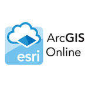
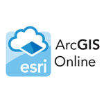

Experience:
* Graduate Research Assistant, UServices, University of Minnesota Aug 2015 - Till date
* Intern at UServices, University of Minnesota. Jun 2015 - Aug 2015
* Cybertech System and Software Ltd. India as SDK (Software Development Kit) GIS Analyst for ESRI technical support. Jan 2012-Jul 2013
Languages:
C, C++, Core Java, Java Script, VB 6.0, VB .NET, SQL, HTML, ASP, XML, C-sharp, ASP.Net, VB.NET, ArcObjects, Python
Database:
Oracle 9i, SQL, MS Access, PostgreSQL
Tools:
Dreamweaver, Eclipse, Net beans 6.0, Pestar UML, WavPad, Visual Studio 2010, Python scripter, Adobe illustrator cc
GIS software:
* ArcGIS Desktop (9.3, 10, 10.1, 10.3), ArcGIS Server API, PGAdmin, QGIS, ERDAS Imagine, Ecognition
GIS developing platform:
* Python scripting, ArcObjects with C#, Java script API, Flex API, Silverlight API, Google maps API
Certification: Diploma in Dot Net Certified by SEED INFOTECH. Jul 2011- Oct 2011
* VB.NET
* C #
* Asp.net


 
